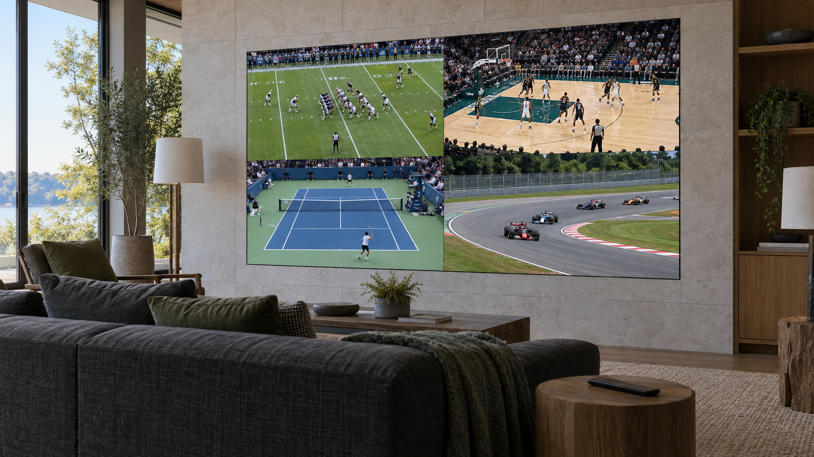

Multiview MicroLED for Home Sports: Watch Several Games on One Wall
Keep several games in view, choose the commentary you want, and bring the big moment full screen.

Several games can share one MicroLED wall while the room's speakers follow the game you choose. A multiview video wall for home combines an Opal display with separately specified video processing and independent sources. The processor arranges those sources into one picture, so the same wall can show four games during the afternoon and a full-screen film that evening.
The first design decision is the size of each game window. A wall that feels enormous during a movie can become surprisingly hard to follow once the picture is divided. Scoreboards, player movement and the view from the far end of the sofa deserve a look before the screen dimensions are settled.
Start with the game window you will actually watch
Four equal windows divide a 16:9 wall in half horizontally and vertically. Each game keeps its 16:9 shape and occupies a quarter of the area. On a 200-inch diagonal wall, each window has the dimensions of a 100-inch diagonal image.
Resolution follows the same geometry. A 3840 × 2160 output divided into four equal windows gives each game 1920 × 1080 pixels. A 4K source is scaled to fit that space.
Ask for a demonstration from your planned seating distance, with the smallest window showing an actual broadcast. Include the seats at the room's edges. The sightlines and seating guide covers the room geometry behind that decision.
Give each game its own source
Four independently chosen games need four available video feeds. An integrator might specify several streaming players or television receivers, with each source assigned to a window. A single app's built-in multiview can also supply a combined picture, with game selection governed by that service.
Bring a list of the leagues, channels and services you use to the design meeting. Your dealer can check simultaneous-stream allowances, source-device requirements and content protection against the intended system. This is also the time to decide how someone changes a channel in one window without disturbing the others.
The video-processing and signal-chain guide explains how sources, processing and the display work together.
Make the sound as easy to choose as the picture
One game's commentary should fill the room at a time. A useful control layout lets you select a window for sound, bring that game full screen and return to the saved multiview layout. The selected audio should be clearly identified on the remote or touch panel.
Crestron's DM NVX multiview documentation provides a concrete example: incoming streams share one video output, and a selected window supplies the audio. The integrator still configures the room's controls and checks dialogue synchronization through the finished sound system.
Specify sports and cinema as complete viewing modes
Opal's bezel-free surface gives every layout one continuous canvas. Cabinet dimensions and pixel pitch determine the physical size and native resolution. The separately specified processor determines the window layouts and the signal it sends to that canvas.
Your integrator should document the resolution, frame rate and color format for both multiview and full-screen viewing. These modes can have different capabilities. For example, Crestron's documented DM NVX multiview mode uses SDR. A room designed for HDR films needs a verified path for full-screen HDR playback.
Before handover, ask your dealer to demonstrate these everyday tasks:
- Start the saved sports layout with the intended sources in each window.
- Change one game's channel while the other games keep playing.
- Select commentary and check that speech matches the picture.
- Bring a game full screen, then restore the previous layout.
- Switch to a movie with the intended picture mode, sound format and room lighting.
A saved sports scene can bring these choices together. The guide to room-control scenes covers how dealers coordinate the display with lighting and audio.
Plan the room around the games you follow
Send an authorized Opal dealer your room dimensions, seating distances, preferred sports services and the number of games you want visible. Those details give the dealer a practical starting point for the wall, processing and controls, with a demonstration that shows how the room will work on game day.